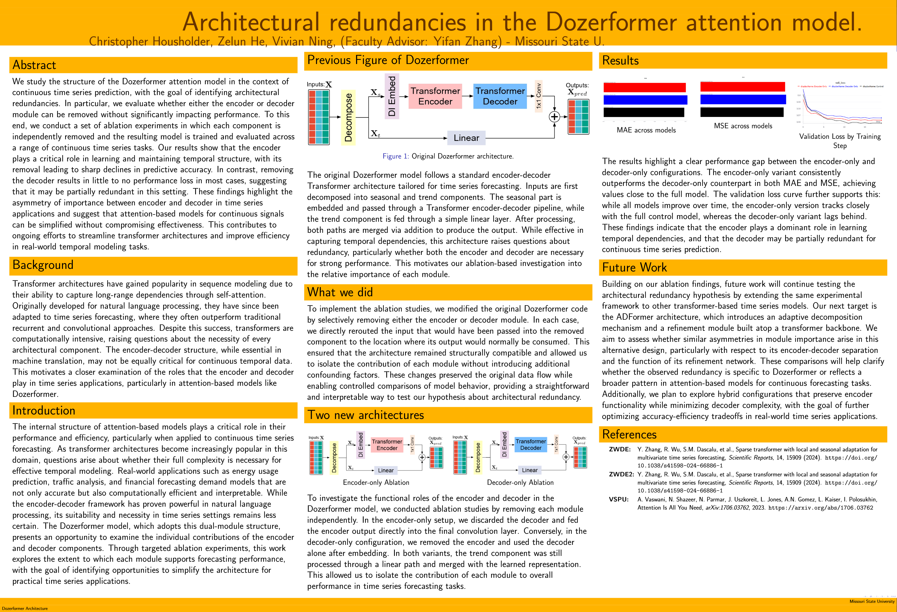
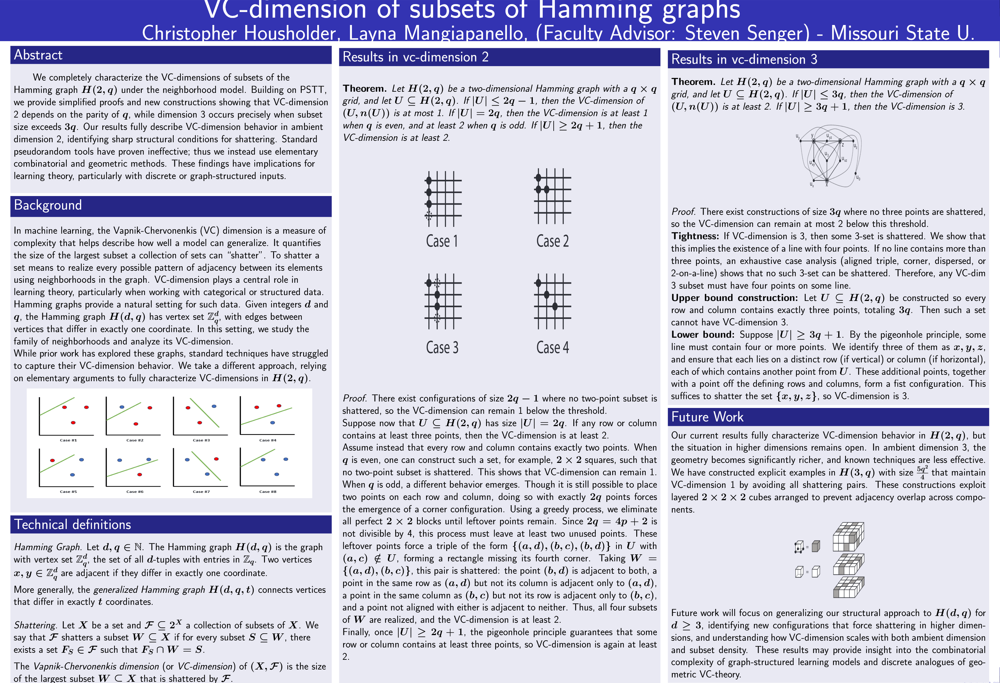
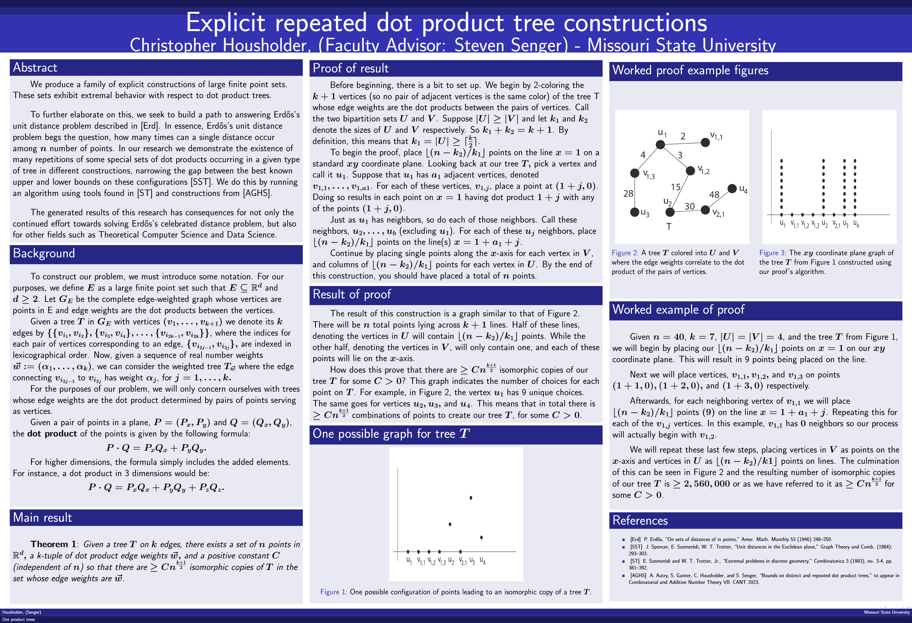

Who am I?
I’m a driven researcher and aspiring pure mathematician with a focus on number theory, analysis, and spectral theory. I’ve published and presented research across multiple domains, including theoretical AI and combinatorics. My long-term goal is to pursue a Ph.D. at a top-tier institution and become a professor dedicated to advancing foundational mathematics.
Research

Architectural redundancies in the Dozerformer attention model on time-series predictions.
Architectural redundancies in the Dozerformer attention model on time-series predictions.
We study the structure of the Dozerformer attention model in the context of continuous time series prediction, with the goal of identifying architectural redundancies. In particular, we evaluate whether either the encoder or decoder module can be removed without significantly impacting performance. To this end, we conduct a set of ablation experiments in which each component is independently removed and the resulting model is trained and evaluated across a range of continuous time series tasks. Our results show that the encoder plays a critical role in learning and maintaining temporal structure, with its removal leading to sharp declines in predictive accuracy. In contrast, removing the decoder results in little to no performance loss in most cases, suggesting that it may be partially redundant in this setting. These findings highlight the asymmetry of importance between encoder and decoder in time series applications and suggest that attention-based models for continuous signals can be simplified without compromising effectiveness. This contributes to ongoing efforts to streamline transformer architectures and improve efficiency in real-world temporal modeling tasks.
CSTA Annual Conference (2025)
- 1st

VC-Dimensions of subsets of the Hamming graph.
VC-Dimensions of subsets of the Hamming graph.
We study the structure of the Dozerformer attention model in the context of continuous time series prediction, with the goal of identifying architectural redundancies. In particular, we evaluate whether either the encoder or decoder module can be removed without significantly impacting performance. To this end, we conduct a set of ablation experiments in which each component is independently removed and the resulting model is trained and evaluated across a range of continuous time series tasks. Our results show that the encoder plays a critical role in learning and maintaining temporal structure, with its removal leading to sharp declines in predictive accuracy. In contrast, removing the decoder results in little to no performance loss in most cases, suggesting that it may be partially redundant in this setting. These findings highlight the asymmetry of importance between encoder and decoder in time series applications and suggest that attention-based models for continuous signals can be simplified without compromising effectiveness. This contributes to ongoing efforts to streamline transformer architectures and improve efficiency in real-world temporal modeling tasks.
Combinatorial and Additive Number Theory (CANT 2025)
- 1st

Explicit repeated dot product tree constructions
Explicit repeated dot product tree constructions
We study dot product trees, which are configurations of points in Euclidean space where edge weights are defined by the dot product of point pairs. For any fixed tree with k edges, we construct a finite point set in ℝd that contains at least Cn(k+1)/2 isomorphic embeddings of the tree with a specified sequence of dot product values, for some constant C > 0. Our approach uses a bipartite coloring of the tree and places points along structured lines to generate repeated patterns. This construction improves known lower bounds and narrows the gap with existing upper bounds in related extremal problems. Motivated by Erdős’s unit distance problem, our work highlights the frequency of repeated dot product configurations and provides new tools for analyzing structured subsets in discrete geometry. These results have further implications in additive combinatorics and theoretical computer science.
Combinatorial and Additive Number Theory (CANT 2024)
- 2nd
Convergence of classical and nonlocal curvature.
We study the recently introduced notion of nonlocal mean curvature, defined via an integral operator involving a convolution kernel. Specifically, we consider curvature of a set Ω ⊂ ℝ² defined by an integrable, radially symmetric, nonnegative, and nonincreasing kernel J, and examine the behavior of the resulting nonlocal curvature functional. Building on previous work, we extend the definition to higher dimensions and investigate its convergence properties in the classical limit. Our main result shows that for sets with C²-boundary, nonlocal mean curvature converges to the classical mean curvature as the support of the kernel shrinks to zero. This confirms that integrable kernels can faithfully recover local geometric information and provides a concrete bridge between nonlocal and classical curvature models.
CNAS Undergraduate Research Symposium
- 2nd